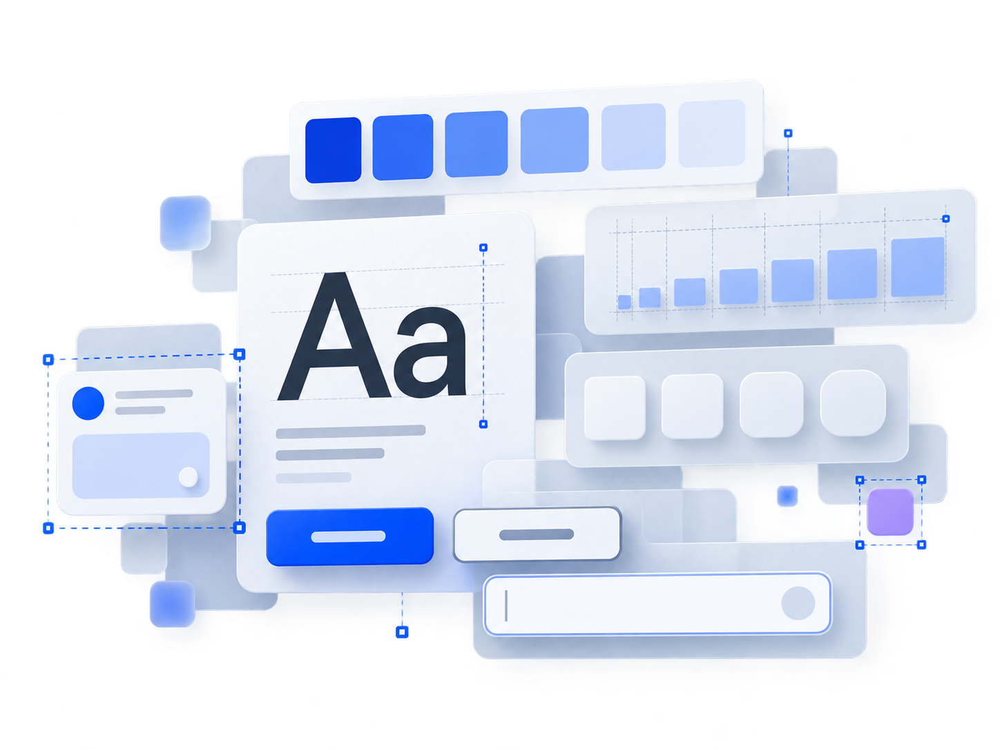

颜色架构与使用原则
基础色阶维护原始色值，语义变量表达使用目的，页面与组件只消费语义颜色。
01
基础色阶
原始颜色与透明度
Color Primitives02
语义颜色
按用途建立稳定映射
Semantic Tokens03
应用层
组件与页面保持一致
Components / Pages从基础样式到组件规则，建立一套清晰、稳定、可复用的产品设计语言，让设计、研发与交付使用同一套语义。

从基础色阶到语义引用，统一产品中的颜色选择、组合与交付方式，让页面、组件和状态保持一致。
基础色阶维护原始色值，语义变量表达使用目的，页面与组件只消费语义颜色。
原始颜色与透明度
Color Primitives按用途建立稳定映射
Semantic Tokens组件与页面保持一致
Components / Pages基础色阶为语义变量提供稳定来源，实际设计优先选择语义颜色。
品牌识别、主要操作、选中与聚焦；500 为默认主题色。
Color Primitives页面结构、文字层级、容器背景与分隔。
Color Primitives变量表达“用在哪里”，模式切换由同名语义映射完成。
bg/canvas页面基础背景text/primary主要内容文字icon/secondary次级操作图标border/subtle轻量分隔边界正文与长文本的最低对比度。状态信息不能只依赖颜色表达。
从字体家族、字号、行高、字重与字距，到界面语义和业务场景的完整规则。
ABCDEFGHIJKLMNOPQRSTUVWXYZ
abcdefghijklmnopqrstuvwxyz
0123456789 · 产品设计规范
中文界面主字体，覆盖 Regular、Medium 与 Semibold。
英文、数字、指标与数据展示。
代码、Token、ID 与变量路径。
以“语义 + 层级”命名，业务页面仅调用样式，不单独覆盖字号、行高或字重。
| 样式 | 预览 | 字号 / 行高 / 字重 | 典型场景 |
|---|---|---|---|
| Display / Large | 页面展示标题 | 32 / 40 / Bold | 数据大盘、引导页 |
| Heading / Page | 页面标题 | 24 / 32 / Bold | 页面一级标题 |
| Heading / Section | 区域标题 | 20 / 28 / Bold | 模块、分区标题 |
| Body / Default | 用于承载主要阅读内容 | 14 / 22 / Regular | 正文、表单说明 |
| Label / Small | 紧凑标签 | 12 / 20 / Medium | Tag、紧凑控件 |
| Code / Default | const value = 12; | 13 / 20 / Regular | 代码、ID、路径 |
以 4px 基础网格统一页面、容器与元素之间的空间秩序，通过语义间距和密度模式表达关联关系。
基础尺度用于变量映射，不直接表达业务含义；优先使用语义 Token。
spacing/1spacing/2spacing/3spacing/4spacing/6spacing/8spacing/12spacing/16先判断关系，再选择距离。组件内部使用 component token，页面结构使用 layout token。
表格、工具栏、复杂筛选
表单、列表、常规页面
介绍页、空状态、引导页
以克制、一致、可解释的圆角体系定义控件边界与容器层级，覆盖组件映射与嵌套关系。
使用 0、2、4、6、8、12、999 七档标准值，不引入用途重叠的 10px 圆角。
radius/none0px连续结构、表格radius/xs2px标签、状态块radius/sm4px按钮、输入框radius/md6px卡片、菜单radius/lg8px弹窗、重点容器radius/xl12px特殊强调区域radius/full999px头像、胶囊标签不使用 10px：它位于 8px 与 12px 之间，缺少独立语义，会增加判断成本。
通过投影、背景模糊、渐进模糊、毛玻璃和遮罩，建立清晰、统一且可复用的界面层级。
投影强度与界面层级对应。越临时、越需要聚焦的内容，投影等级越高。
Shadow/XSShadow/SMShadow/MDShadow/LGShadow/XL填充、描边、模糊与投影共同建立毛玻璃层级。
用于触发即时操作。通过统一类型、尺寸、内容、状态和组合方式，建立稳定且可预测的操作层级。
一个区域最多一个 Primary。Danger 表达风险语义，不参与普通按钮的视觉层级排序。
按钮文案优先使用“动词”或“动词 + 对象”，默认使用 Medium 尺寸。
一个操作区域只保留一个 Primary；危险操作说明后果。
不要重新绘制按钮或用颜色覆盖现有语义。
基于 Remix Icon 4.9.1，统一 24 × 24 网格、语义颜色、尺寸与替换方式，覆盖常用 B 端场景。
所有源组件保留 24 × 24 基准网格。使用时按场景等比缩放，不拉伸路径。
图标位于固定点击容器中，由 Auto Layout 负责居中与间距。
× 非等比缩放 × 手动挪动节点 × 混用 16 / 20 / 24 px
需要视觉校准时，调整外部容器，而不是修改源图标。用于接收单行文本数据。通过统一尺寸、内容、状态、图标与错误反馈，建立清晰、稳定且可访问的录入体验。
状态由交互或校验结果驱动。Focus 使用 2px 视觉强调，Error 使用危险语义边框与状态图标。
三种高度与横向内边距均绑定 Input 组件变量，默认使用 Medium。
汇集由设计规范产出的 Skill 说明、Token 映射和组件实践文档，方便后续继续补充与版本管理。
颜色、字体、间距、圆角与效果的选择逻辑、变量命名及交付检查。
design-foundations-skill.md · V1.0按钮、图标和输入框的结构、属性、状态、无障碍与验收规则。
component-guidelines-skill.md · V1.0集中记录当前 Skill 文件、适用范围、版本与后续扩展位置。
skill-docs-index.md · V1.0后续新增 Figma 画板或 Skill 文档时，可以继续追加导航、规范章节和下载卡片。